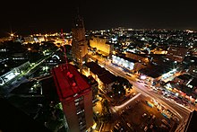

Economy of the Democratic Republic of the Congo
|  Kinshasa, capital and economic center of the Democratic Republic of the Congo | |
| Currency | Congolese Franc (CDF) |
|---|---|
| Calendar year | |
Trade organisations | AU, AfCFTA (signed), AfDB, SADC, COMESA, ECCAS, SADC, WTO, Group of 77 |
Country group | |
| Statistics | |
| Population | |
| GDP | |
| GDP rank | |
GDP growth |
|
GDP per capita | |
GDP per capita rank | |
GDP by sector |
|
| 5.0% (2020 est.)[4] | |
Population below poverty line | |
| 42.1 medium (2012)[8] | |
Labour force | |
Labour force by occupation | N/A |
| Unemployment | 4.5% (2022) |
Main industries | mining (copper, cobalt, gold, diamonds, coltan, zinc, tin, tungsten), mineral processing, consumer products (including textiles, plastics, footwear, cigarettes, processed foods, beverages), metal products, lumber, cement, commercial ship repair |
| External | |
| Exports | |
Export goods | gold, diamonds, copper, cobalt, coltan, zinc, tin, tungsten, crude oil, wood products, coffee |
Main export partners |
|
| Imports | |
Import goods | machinery, transportation equipment, fuel, food |
Main import partners | |
Gross external debt | |
| Public finances | |
| Revenues | $4.943 billion (2018 est.) |
| Expenses | $5.198 billion (2018 est.) |
All values, unless otherwise stated, are in US dollars. | |
.jpg){kind=link}
The economy of the Democratic Republic of the Congo has declined drastically around the 1980s,[15] despite being home to vast potential in natural resources and mineral wealth; their gross domestic product is $69.474 billion as of 2023. During the last five reported years the exports of Democratic Republic of the Congo have changed by $15.2B from $13.3B in 2017 to $28.5B in 2022.
At the time of its independence in 1960, the Democratic Republic of the Congo was the second most industrialized country in Africa after South Africa. It boasted a thriving mining sector and its agriculture sector was relatively productive.[16] Since then, decades of corruption, war, and political instability have been a severe detriment to further growth, today leaving DRC with a GDP per capita and a HDI rating that rank among the world's lowest and make the DRC one of the most fragile and, according to the United Nations, least developed countries in the world.
Despite this the DRC is quickly modernizing; it tied with Malaysia for the largest positive change in HDI development in 2016. Government projects include strengthening the health system for maternal and child health, expansion of electricity access, water supply reconstructions, and urban and social rehabilitation programs.
Economic implications of conflicts
[edit]The two recent conflicts (the First and Second Congo Wars), which began in 1996, have dramatically reduced national output and government revenue,[15] have increased external debt,[15] and have resulted in deaths of more than five million people from war, and associated famine and disease.[17] Malnutrition affects approximately two-thirds of the country's population.[18]
Agriculture is the mainstay of the economy, accounting for 57.9% of GDP in 1997.[19] In 1996, agriculture employed 66% of the work force.[19]
Rich in minerals, the Democratic Republic of the Congo has a difficult history of predatory mineral extraction, which has been at the heart of many struggles within the country for many decades, but particularly in the 1990s. The economy of the second largest country in Africa relies heavily on mining. However, much economic activity occurs in the informal sector and is not reflected in GDP data.[20]
In 2006 Transparency International ranked the Democratic Republic of the Congo 156 out of 163 countries in the Corruption Perception Index, tying Bangladesh, Chad, and Sudan with a 2.0 rating.[21] President Joseph Kabila established the Commission of Repression of Economic Crimes upon his ascension to power in 2001.[22]
The conflicts in the Democratic Republic of Congo were over water, minerals, and other resources. Political agendas have worsened the economy, as in times of crisis, the elite benefit while the general populace suffers. This is worsened as a result of corrupt national and international corporations. The corporations instigate and allow the fighting for resources because they benefit from it. A large proportion of fatalities in the country are attributed to a lack of basic services[citation needed]. The influx of refugees since the war in 1998 only serves to worsen the issue of poverty. Money of the taxpayers in the DRC is often misappropriated by the corrupt leaders of the country, who use the money to benefit themselves instead of the citizens of the DRC. The DRC is consistently rated the lowest on the UN Human Development Index.[23]
Economic history
[edit]{kind=link}
{kind=link}
After Leopold
[edit]Forced labor (slavery) was important for the rural sector. The corporations that dominated the economy were mostly owned by Belgium, but British capital also played an important role. The 1950s were a period of rising income and expectations. Congo was said to have the best public health system in Africa, but there was also a huge wealth disparity. Belgian companies favored workers in certain areas more and exported them to work in different areas, restricting opportunities for others. Favored groups also received better education and were able to secure jobs for people in the same ethnic group which increased tensions. In 1960 there were only 16 university graduates out of a population of 20 million. Belgium still had economic power and independence gave little opportunity for improvement. Common refrains included "no elite, no trouble" and "before independence = after independence". When the Belgians left, most of the government officials and educated residents left with them. Before independence, there were just 3 out of 5000 government jobs held by Congolese people.[24] The resulting loss of institutional knowledge and human capital crippled the government.
_exports.PNG){kind=link}
Zaire
[edit]After the Congo Crisis, Mobutu arose as the country's sole ruler and stabilized the country politically. Economically, however, the situation continued to decline, and by 1979, the purchasing power was only 4% of that from 1960.[25] Starting in 1976 the IMF provided stabilizing loans to the dictatorship. Much of the money was embezzled by Mobutu and his circle.[25] This was not a secret as the 1982 report by IMF's envoy Erwin Blumenthal documented. He stated, it is "alarmingly clear that the corruptive system in Zaire with all its wicked and ugly manifestations, its mismanagement and fraud will destroy all endeavors of international institutions, of friendly governments, and of the commercial banks towards recovery and rehabilitation of Zaire’s economy".[26] Blumenthal indicated that there was "no chance" that creditors would ever recover their loans. Yet the IMF and the World Bank continued to lend money that was either embezzled, stolen, or "wasted on elephant projects".[27] "Structural adjustment programmes" implemented as a condition of IMF loans cut support for health care, education, and infrastructure.[25]
1990s
[edit]Poor infrastructure, an uncertain legal framework, corruption, and lack of openness in government economic policy and financial operations remain a brake on investment and growth.[15] A number of International Monetary Fund (IMF) and World Bank missions have met with the new government to help it develop a coherent economic plan but associated reforms are on hold.[15]
Faced with continued currency depreciation, the government resorted to more drastic measures and in January 1999 banned the widespread use of American dollars for all domestic commercial transactions, a position it later adjusted.[19] The government has been unable to provide foreign exchange for economic transactions, while it has resorted to printing money to finance its expenditure.[19] Growth was negative in 2000 because of the difficulty of meeting the conditions of international donors, continued low prices of key exports, and post-coup instability. Although depreciated, congolese francs have been stable for few years (Ndonda, 2014)
2000s
[edit]Conditions improved in late 2002 with the withdrawal of a large portion of the invading foreign troops.[citation needed] A number of IMF and World Bank missions have met with the government to help it develop a coherent economic plan,[15] and President Kabila has begun implementing reforms.[citation needed]
DRC's economic growth decelerated from its pre-COVID level of 4.4% in 2019, to an estimated 0.8% in 2020. Growth was driven by the extractives sector which, helped by robust demand from China, expanded by 6.9% in 2020 (compared to 1% in 2019). Meanwhile, non-mining sectors contracted by 1.6% (vs. growth of 5.7% in 2019) due to pandemic-related mobility restrictions, weaker trading activities and constrained government spending. Private consumption and government investment fell in 2020 by an estimated 1.0 and 10.2%, respectively.[28]
Special economic zones
[edit]The DRC is embarking on the establishment of special economic zones (SEZ) to encourage the revival of its industry. The first SEZ was planned to come into being in 2012 in N'Sele, a commune of Kinshasa, and will focus on agro-industries. The Congolese authorities also planned to open another zone dedicated to mining (Katanga) and a third dedicated to cement (in the Bas-Congo).[29] There are three phases to the program that each have their own objectives. Phase I was the precursor to the actual investment in the Special Economic Zone where policymakers agreed to the framework, the framework was studied for its establishment, and to predict the potential market demand for the land. Stage one of Phase II involved submitting laws for the Special Economic Zone, finding good sites for businesses, and currently there is an effort to help the government attract foreign investment. Stage two of Phase II hasn't been started yet and it involves assisting the government in creating framework for the country, creating an overall plan for the site, figuring out what the environmental impact of the project will be, and guessing how much it will cost and what the return can be made on the investment. Phase III involves the World Bank creating a transaction phase that will keep everything competitive. The program is looking for options to hand over the program to the World Bank which could be very beneficial for the western part of the country.
Data
[edit]The following table shows the main economic indicators in 1980–2023. Inflation below 5% is in green.[30]
| Year | GDP (in billion US$ PPP) |
GDP per capita (in US$ PPP) |
GDP (in billion US$ nominal) |
GDP growth (real) | Inflation (in Percent) | Government debt (in % of GDP) |
|---|---|---|---|---|---|---|
| 1980 | 19.2 | 766 | 68.6 | ... | ||
| 1985 | ... | |||||
| 1990 | ... | |||||
| 1995 | ... | |||||
| 2000 | 135% | |||||
| 2005 | ||||||
| 2006 | ||||||
| 2007 | ||||||
| 2008 | ||||||
| 2009 | ||||||
| 2010 | ||||||
| 2011 | ||||||
| 2012 | ||||||
| 2013 | ||||||
| 2014 | ||||||
| 2015 | ||||||
| 2016 | ||||||
| 2017 | ||||||
| 2018 | ||||||
| 2019 | ||||||
| 2020 | ||||||
| 2021 | ||||||
| 2022 | ||||||
| 2023 |
Economic implications of instability
[edit]Ongoing conflicts dramatically reduced government revenue and increased external debt.[15] As Reyntjens wrote, "Entrepreneurs of insecurity are engaged in extractive activities that would be impossible in a stable state environment. The criminalization context in which these activities occur offers avenues for considerable factional and personal enrichment through the trafficking of arms, illegal drugs, toxic products, mineral resources and dirty money."[citation needed] Ethnic rivalries were made worse because of economic interests and looting and coltan smuggling took place. Illegal monopolies formed in the country where they used forced labor for children to mine or work as soldiers. National parks were overrun with people looking to exploit minerals and resources. Increased poverty and hunger from the war and that increased the hunting of rare wildlife. Education was denied when the country was under foreign control and very few people make money off the minerals in the country. The national resources are not the root cause for the continued fighting in the region, however, the competition has become an incentive to keep fighting.[1] The DRC's level of economic freedom is one of the lowest in the world, putting it in the repressed category. The armed militias fight with the government in the eastern section of the country over the mining sector or the corruption of the government, and weak policies lead to the instability of the economy. Human rights abuses also ruin economic activity; the DRC has a 7% unemployment rate, but still has one of the lowest GDP's per capita in the world. A major problem for people trying to start their own companies is that the minimum amount of capital needed to launch the company is five times the average annual income, and prices are regulated by the government, which almost forces people to have to work for the larger, more corrupt businesses; otherwise, they won't have work. It is hard for the DRC to encourage foreign trade because of the regulatory barriers.[31]
International relations
[edit]Poor infrastructure, an uncertain legal framework, corruption, and lack of openness in government economic policy and financial operations remain a brake on investment and growth.[15] A number of International Monetary Fund (IMF) and World Bank missions have met with the new government to help it develop a coherent economic plan but associated reforms are on hold.[15]
Faced with continued currency depreciation, the government resorted to more drastic measures and in January 1999 banned the widespread use of U.S. dollars for all domestic commercial transactions, a position it later adjusted.[19] The government has been unable to provide foreign exchange for economic transactions, while it has resorted to printing money to finance its expenditure.[19] Growth was negative in 2000 because of the difficulty of meeting the conditions of international donors, continued low prices of key exports, and post-coup instability. 125 companies in 2003 contributed to the conflict in DRC showing the corruption.
World Bank
[edit]With the help of the International Development Association the DRC has worked toward the reestablishment of social services. This is done by giving 15 million people access to basic health services and giving bed nets to prevent malaria from spreading to people. With the Emergency Demobilization and Reintegration Program more than 107,000 adults and 34,000 child soldiers stood down their militarized posture. The travel time from Lubumbashi to Kasomeno in Katanga went down from seven days to two hours because of the improved roads which led to the decrease of prices of main goods by 60%. With the help of the IFC, KfW, and the EU the DRC improved its businesses by reducing the time it took to create a business by 51%, reducing the time it took to get construction permits by 54%, and reducing the number of taxes from 118 to 30. Improvements in health have been noticeable specifically that deliveries attended by trained staff jumped from 47 to 80%. In education 14 million textbooks were provided to children, completion rates of school have increased, and higher education was made available to students that chose to pursue it.[32]
International Monetary Fund
[edit]The IMF plans on giving the DRC a $1 billion loan after its two-year suspension after it failed to give details about a mining deal from one of its state owned mines and an Israeli billionaire, Dan Gertler. The loan may be necessary for the country because there will be elections in December 2016 for the next president and the cost of funding this would range around $1.1 billion. The biggest problem with the vote is getting a country of 68 million people the size of Western Europe to polling stations with less than 1,860 miles of paved roads.[33]
Sectors
[edit]Agriculture
[edit]Agriculture is the mainstay of the economy, accounting for 57.9% of the GDP in 1997.[19] Main cash crops include coffee, palm oil, rubber, cotton, sugar, tea, and cocoa.[19] Food crops include cassava, plantains, maize, groundnuts, and rice.[19] In 1996, agriculture employed 66% of the work force.[19]
The Democratic Republic of Congo produced, in 2018:
- 29.9 million tons of cassava (3rd largest producer in the world, second only to Nigeria and Thailand);
- 4.7 million tons of plantain (largest producer in the world);
- 2 million tons of maize;
- 1.1 million tons of palm oil;
- 990 thousand tons of rice;
- 384 thousand tons of sweet potato;
- 309 thousand tons of banana;
- 307 thousand tons of peanut;
- 213 thousand tons of mango (including mangosteen and guava);
- 213 thousand tons of papaya;
- 205 thousand tons of beans;
- 186 thousand tons of pineapple;
- 168 thousand tons of orange;
- 101 thousand tons of potato;
In addition to smaller productions of other agricultural products, such as coffee (29 thousand tons), cocoa (3.6 thousand tons), natural rubber (14 thousand tons) and tea (3.6 thousand tons).[34]
Fishing
[edit]The Democratic Republic of Congo also possesses 50 percent of Africa's forests and a river system that could provide hydro-electric power to the entire continent, according to a United Nations report on the country's strategic significance and its potential role as an economic power in central Africa.[35] Fish are the single most important source of animal protein in the DRC. Total production of marine, river, and lake fisheries in 2003 was estimated at 222,965 tons, all but 5,000 tons from inland waters. PEMARZA, a state agency, carries on marine fishing.
Forestry
[edit]Forests cover 60 percent of the total land area. There are vast timber resources, and commercial development of the country's 61 million hectares (150 million acres) of exploitable wooded area is only beginning. The Mayumbe area of Bas-Congo was once the major center of timber exploitation, but forests in this area were nearly depleted. The more extensive forest regions of the central cuvette and of the Ubangi River valley have increasingly been tapped.
Roundwood removals were estimated at 72,170,000 m2 in 2003, about 95 percent for fuel. Some 14 species are presently being harvested. Exports of forest products in 2003 totalled $25.7 million. Foreign capital is necessary in order for forestry to expand, and the government recognizes that changes in tax structure and export procedures will be needed to facilitate economic growth.[citation needed]
Mining
[edit]Rich in minerals, the DRC has a difficult history of predatory mineral extraction, which has been at the heart of many struggles within the country for many decades, but particularly in the 1990s. Although the economy of the Democratic Republic of the Congo, the second largest country in Africa who has historically relied heavily on mining, is no longer reflected in the GDP data as the mining industry has suffered from long-term "uncertain legal framework, corruption, and a lack of transparency in government policy." The informal sector.[20]
In her book entitled The Real Economy of Zaire, MacGaffey described a second, often illegal economy, "system D", which is outside the official economy (MacGaffey 1991:27).[36] and therefore is not reflected in the GDP.
Exploitation of mineral substances by companies
[edit]The economy of the second largest country in Africa relies heavily on mining. The Congo is the world's largest producer of cobalt ore,[37] and a major producer of copper and industrial diamonds. The Congo has more than 30% of the world's diamond reserves.,[38] mostly in the form of small, industrial diamonds. The coltan is a major source of tantalum, which is used in the fabrication of electronic components in computers and mobile phones. In 2002, tin was discovered in the east of the country, but, to date, mining has been done on a small scale. Manono in Central DRC has a significant deposit of lithium and tin with tantalum and niobium and is being developed by an Australian company. Production is expected in 2023. According to a 2011 report the total value of the major mineral reserves in the DRC amounted to a total of over 300 billion US dollars at the time.[39]
Smuggling of the conflict minerals, coltan and cassiterite (ores of tantalum and tin, respectively), has helped fuel the war in the Eastern Congo.[40]
Today's larger mining companies are making changes and adhering to global demand for ESG (Environmental, Social and Governance) and IRMA (Initiative for Responsible Mining Assurance). One such globally recognised certification is the 3T iTSCi, the only widely implemented and accepted mineral traceability and due diligence system in the region for the 3T minerals – Tin, Tantalum and Tungsten, an internationally recognised certification for responsible mining and traceability under the 2010 Dodd-Frank Act. Today four central African countries including the Democratic Republic of Congo (DRC) provides legitimate and ethical 3T minerals. ITSCI is the only industry initiative with standards 100% aligned with the OECD Guidance. Much has been done in the last 15 years, providing artisanal and small-scale miners a support network through iTSCi, to build the foundations and regulate the industry. At the end of 2019 ITSCI has seen to 2000 mines, employment of around 80,000 miners, and the supply of over 2000 tonnes of tin, tantalum and tungsten minerals per month; the initiative has come a long way in the last decade. A report had been done by Pact in 2015, detailing iTSCi's progress over the previous five years, it discusses the successes, the challenges ahead and the work yet to be done. Entitled Unconflicted: Making Conflict-Free Mining a Reality in the DRC, Rwanda and Burundi.
Copper and cobalt
[edit]Katanga Mining Limited, a London-based company, owns the Luilu Metallurgical Plant, which has a capacity of 175,000 tonnes of copper and 8,000 tonnes of cobalt per year, making it the largest cobalt refinery in the world. After a major rehabilitation program, the company restarted copper production in December 2007 and cobalt production in May 2008.[41]
Informal sector
[edit]Much economic activity occurs in the informal sector and is not reflected in GDP data.[20]
Transport
[edit]{kind=link}
Ground transport in the Democratic Republic of Congo has always been difficult. The terrain and climate of the Congo Basin present serious barriers to road and rail construction, and the distances are enormous across this vast country. Furthermore, chronic economic mismanagement and internal conflict has led to serious under-investment over many years.
On the other hand, the Democratic Republic of Congo has thousands of kilometres of navigable waterways, and traditionally water transport has been the dominant means of moving around approximately two-thirds of the country.
See also
[edit]- Democratic Republic of the Congo
- List of companies based in the Democratic Republic of the Congo
- Mining industry of the Democratic Republic of the Congo
- United Nations Economic Commission for Africa
References
[edit] This article incorporates public domain material from The World Factbook. CIA.
This article incorporates public domain material from The World Factbook. CIA.
- ^ "World Economic Outlook Database, April 2019". IMF.org. International Monetary Fund. Retrieved 29 September 2019.
- ^ "World Bank Country and Lending Groups". datahelpdesk.worldbank.org. World Bank. Retrieved 29 September 2019.
- ^ "Population, total - Congo, Dem. Rep". data.worldbank.org. World Bank. Retrieved 3 March 2020.
- ^ a b c d e "World Economic Outlook Database, April 2023". IMF.org. International Monetary Fund. Retrieved 6 December 2019.
- ^ "Global Economic Prospects, January 2020 : Slow Growth, Policy Challenges" (PDF). openknowledge.worldbank.org. World Bank. p. 147. Retrieved 23 January 2020.
- ^ "Poverty headcount ratio at national poverty lines (% of population) - Congo, Dem. Rep". data.worldbank.org. World Bank. Retrieved 3 March 2020.
- ^ "Poverty headcount ratio at $1.90 a day (2011 PPP) (% of population) - Congo, Dem. Rep". data.worldbank.org. World Bank. Retrieved 3 March 2020.
- ^ "GINI index (World Bank estimate) - Congo, Dem. Rep". data.worldbank.org. World Bank. Retrieved 3 March 2020.
- ^ "Human Development Index (HDI)". hdr.undp.org. HDRO (Human Development Report Office) United Nations Development Programme. Retrieved 11 December 2019.
- ^ "Inequality-adjusted Human Development Index (IHDI)". hdr.undp.org. HDRO (Human Development Report Office) United Nations Development Programme. Retrieved 11 December 2019.
- ^ "Labor force, total - Congo, Dem. Rep". data.worldbank.org. World Bank & ILO. Retrieved 3 March 2020.
- ^ "Employment to population ratio, 15+, total (%) (national estimate) - Congo, Dem. Rep". data.worldbank.org. World Bank & ILO. Retrieved 3 March 2020.
- ^ "Export Partners of the Democratic Republic of the Congo". The Observatory of Economic Complexity. Retrieved 21 April 2023.
- ^ "Import Partners of the Democratic Republic of the Congo". The Observatory of Economic Complexity. Retrieved 21 April 2023.
- ^ a b c d e f g h i
 This article incorporates text from this source, which is in the public domain: "Congo, Democratic Republic of the". The World Factbook. Central Intelligence Agency. Archived from the original on 18 October 2000.
This article incorporates text from this source, which is in the public domain: "Congo, Democratic Republic of the". The World Factbook. Central Intelligence Agency. Archived from the original on 18 October 2000.
- ^ Centre National d'Appui au Développement et à la Participation Paysanne CENADEP (23 October 2009). Province orientale :le diamant et l'or quelle part dans la reconstruction socio - économique de la Province ? (Report). Archived from the original on 25 November 2009.
- ^ Moszynski, Peter (2008). "5.4 million people have died in Democratic Republic of Congo since 1998 because of conflict, report says". BMJ (Clinical Research Ed.). 336 (7638): 235. doi:10.1136/bmj.39475.524282.DB. PMC 2223004. PMID 18244974.
- ^ Seema Shekhawat (January 2009). Governance Crisis and Conflict in the Democratic Republic of Congo (PDF) (Report). Working Paper No. 6. Mumbai: Centre for African Studies, University of Mumbai. Archived from the original (PDF) on 6 July 2014.
- ^ a b c d e f g h i j
 This article incorporates text from this source, which is in the public domain: "Background Note: Democratic Republic of Congo". U.S. Department of State. January 2000. Archived from the original on 6 June 2002.
This article incorporates text from this source, which is in the public domain: "Background Note: Democratic Republic of Congo". U.S. Department of State. January 2000. Archived from the original on 6 June 2002.{{cite web}}: CS1 maint: unfit URL (link) - ^ a b c "Dublin - Research and Markets".
- ^ J. Graf Lambsdorff (2006). "Corruption Perceptions Index 2006". Transparency International. Archived from the original on 16 April 2011. Retrieved 21 January 2008.
- ^ Werve, Jonathan (2006). The Corruption Notebooks 2006. p. 57.
- ^ "The Democratic Republic of Congo – Global Issues". www.globalissues.org. 21 August 2010. Retrieved 13 December 2015.
- ^ Trapido, Joe (April 2015). "Joe Trapido: Africa's Leaky Giant. New Left Review 92, March–April 2015". New Left Review (92): 5–40. Retrieved 13 December 2015.
- ^ a b c David van Reybrouck (25 March 2014). Congo: The Epic History of a People. HarperCollins, 2012. p. 374ff. ISBN 978-0-06-220011-2.
- ^ Georges Nzongola-Ntalaja (1986). The Crisis in Zaire: Myths and Realities. Africa World Press, 1986. p. 226. ISBN 0-86543-023-3.
- ^ Aikins Adusei (30 May 2009). "IMF and World Bank: Agents of Poverty or Partners of Development?". Modern Ghana. Retrieved 30 March 2015.
- ^ "Overview". World Bank. Retrieved 10 October 2021.
- ^ [1] Le "paradis" où le droit fera la loi, L'Echo, novembre 2010 (in French)
- ^ "Report for Selected Countries and Subjects". IMF. Retrieved 26 February 2024.
- ^ "Democratic Republic of Congo Economy: Population, GDP, Inflation, Business, Trade, FDI, Corruption". www.heritage.org. Retrieved 24 February 2017.
- ^ "News & Broadcast - Democratic Republic of Congo: Country Results Profile". web.worldbank.org. Retrieved 13 December 2015.
- ^ Beith, Malcolm; Richardson, Paul (18 February 2015). "IMF Ready to Lend $1 Billion to Democratic Republic of Congo". Bloomberg. Retrieved 13 December 2015.
- ^ "Democratic Republic of the Congo production in 2018, by FAO".
- ^ "Democratic Republic of the Congo economic and strategic significance".
- ^ Janet MacGaffey (1991). The Real Economy of Zaire: The Contribution of Smuggling and Other Unofficial Activities to National Wealth. London: James Currey. p. 175.
- ^ "Cobalt: World Mine Production, By Country". Retrieved 30 June 2008.
- ^ "DR Congo poll crucial for Africa" BBC News. 16 November 2006.
- ^ https://www.researchgate.net/publication/304654988_Local_Livelihoods_Global_Interests_and_the_State_in_the_Congolese_Mining_Sector [bare URL]
- ^ Polgreen, Lydia (16 November 2008). "Congo's Riches, Looted by Renegade Troops". The New York Times. Retrieved 27 March 2010.
- ^ "Katanga Project Update and 2Q 2008 Financials, Katanga Mining Limited". 12 August 2008. Archived from the original on 13 July 2011. Retrieved 3 August 2011.
External links
[edit]- Janet MacGaffey (1991). The Real Economy of Zaire: The Contribution of Smuggling and Other Unofficial Activities to National Wealth. London: James Currey. p. 175.
- Seema Shekhawat (January 2009). Governance Crisis and Conflict in the Democratic Republic of Congo (PDF) (Report). Working Paper No. 6. Mumbai: Centre for African Studies, University of Mumbai. Archived from the original (PDF) on 6 July 2014.
- Economy of the Democratic Republic of the Congo at Curlie
- Democratic Republic of the Congo latest trade data on ITC Trade Map
- Dias, Elizabeth (24 July 2009). "First Blood Diamonds, Now Blood Computers?". Time.
- Oasis Kodila Tedika et Francklin Kyayima Muteba, The sources of growth in DRC before independence. A cointegration analysis, CRE Working paper, n°02/10, juin 2010
- Exenberger, Andreas/Hartmann, Simon (2007): The Dark Side of Globalization. The Vicious Cycle of Exploitation from World Market Integration: Lesson from the Congo, Working Papers in Economics and Statistics 31-2007
- Doing Business in Congo, Dem. Rep. 2013 (Report). World Bank. Retrieved 25 March 2013.
- Nicolas Niarchos (December 2023). "In Congo's Cobalt Mines". New York Review of Books. 70 (19). "The lucrative mining industry is unscrupulous, environmentally disastrous, and a linchpin of Congo’s economy. How can it be reformed?" Review of 5 books on the topic.